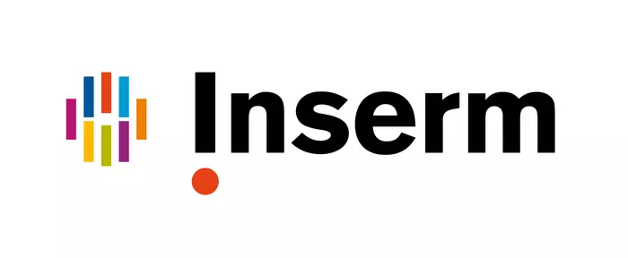
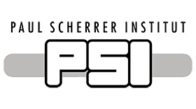

Erasmus Mundus Joint Master Degree in Medical Imaging and Applications (MAIA). The first semester, S1 (6 months), Master of Science in Computer Vision is carried out within the Centre Universitaire Condorcet in Le Creusot, a subdivision of the department of Sciences and Technology of the University of Burgundy, France. The second semester, S2 (6 months), Master of Science in Computer Engineering takes place at the Master of Università degli studi di Cassino e del Lazio Meridionale (UNICAS), in Cassino, Italy. The third semester, S3 (6 months), Master of Science in Medical Imaging and Applications is hosted by the Escola Politècnica Superior of the University of Girona, in Catalunya, Spain. The fourth semester, S4 (6 months), the Master’s thesis period, at the Institut National de la Santé et de la Recherche Médicale (INSERM), within the NeuroGenetics of Mouse Models (NGMM) group. This opportunity is in collaboration with the Institute of Molecular Chemistry of the University of Burgundy (ICMUB), nestled within the research environment of the University of Burgundy in Dijon, France.
|  |
I attended the EXCITE Summer School on Biomedical Imaging hosted by the Swiss Federal Institute of Technology Zurich (ETH Zurich) collaboration with University of Zurich, University Hospital Zurich, and the Paul Scherrer Institut (PSI), where I earned 4 ECTS credits. This intensive program focused on advanced biomedical imaging techniques and included a comprehensive series of lectures from leading experts in Fluorescence, Electron, and Super Resolution Microscopy. I actively participated in practical sessions on pre-clinical animal SPECT/CT imaging, which enhanced my skills in image acquisition, processing, and analysis, particularly in CT and MR imaging modalities. Additionally, I conducted live mouse image analysis at PSI, gaining invaluable real-time experience in biomedical imaging. This training not only improved my technical proficiency with sophisticated imaging equipment but also deepened my understanding of their applications in medical research, preparing me for a career that bridges the gap between innovative imaging technologies and clinical application.
 |
 |
The Winter School at the University of Cassino and Southern Lazio covers key topics in medical imaging, including Statistical Learning, Numerical Optimization, and Using Qt with Python for Medical Imaging. Students gain insights into Research Activities and Principles of Automatic Control, while sessions on Research and Entrepreneurship foster innovation. The program also includes a focused overview of MRI Physics.
Master's degree in Software Engineering was completed at Tianjin University, within the School of Computer Software. The program was designed to cover a broad range of subjects, including Advanced Artificial Intelligence, Matrix Theory, Virtualization and Cloud Computing, and Big Data Algorithms. Practical skills were developed through courses like Engineering Practice and Experimental Skills, while emerging technologies such as The Internet of Things and Sensor and Sensing Technologies were explored. Additionally, studies in Chinese Language and Culture were included, providing a comprehensive education in both technical and cultural fields.
The Oracle Certified Professional (OCP) 11g certification from IBCS-PRIMAX Software (Bangladesh) Ltd. is a comprehensive program focused on mastering Oracle Database 11g. The certification process involves in-depth training in key areas such as Oracle Database 11g: SQL, Oracle Database 11g: Administration I, and Oracle Database 11g: Administration II. This certification equips professionals with the skills necessary for effective database management, including installation, configuration, performance tuning, and troubleshooting of Oracle 11g databases.